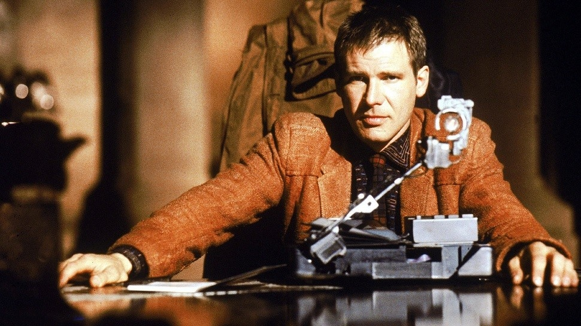

5 Redenen Waarom We Uitkijken Naar Blade Runner 2049.
2017 is een goed jaar voor films, en sciencefictionfilms in het bijzonder. We hebben er 35 jaar op moeten wachten, maar we krijgen nu dan eindelijk een vervolg op het iconische Blade Runner. De film uit 1982 heeft een ongekende invloed gehad, die tot op de dag van vandaag terug te zien is in Hollywood. Het was dan ook niet heel moeilijk om 5 redenen te bedenken waarom we uitkijken naar Blade Runner 2049.
Dennis Villeneuve
Regisseur Villeneuve treedt in de voetsporen van Ridley Scott - absoluut geen makkelijke taak. Toch heeft de Frans-Canadese filmmaker nog geen enkele flop op zijn naam staan. Hij regisseerde eerder Prisoner, Sicario, Enemy en het briljante Arrival. Het ziet er dus rooskleurig uit voor Blade Runner 2049.
Harrison Ford
De oude rot keert terug in een van zijn eerste rollen. In 1982 was hij net doorgebroken binnen het Star Wars-universum en was Blade Runner zijn eerste film als 'beroemdheid'. Nu keert hij dus terug in de rol van Rick Deckard, voor het eerst in 35 jaar. We hopen dat er bepaalde vragen worden beantwoord, maar daarover zo meer...
Een visueel spectakel
Als we de trailers mogen geloven, is Blade Runner 2049 een genot voor het oog. Regisseur Villeneuve heeft al laten zien een goede blik te hebben op het gebruik van indrukwekkende visuals met zijn vorige film, Arrival. In de tot nu toe uitgebrachte beelden zien we een aantal iconische landschappen, waaronder een Los Angeles in de toekomst, inclusief gigantische gebouwen.
Sciencefictionicoon

Met Blade Runner 2049 krijgen we een frisse toevoeging aan het sciencefictiongenre. Het origineel uit 1982 zette een nieuwe standaard voor soortgelijke films die volgden en Blade Runner 2049 lijkt hier keihard op voort te bouwen. Van het heerlijke neo-noir-stijltje tot het gebruik van voertuigen en wapens, alles voelt goed aan dit vervolg.
Eindelijk antwoorden
Geen zorgen, je hoeft niet de originele Blade Runner te hebben gezien om te genieten van deze nieuwe iconische blockbuster. Toch kan het wel lonen, zeker omdat fans al jaren speculeren over de nodige implicaties van het origineel. Hoewel we niet echt kunnen spreken van een open einde, is het absoluut mogelijk om na het zien de originele Blade Runner achter te blijven met vragen. Vragen die Blade Runner 2049 hopelijk gaat beantwoorden. De wereld die Ridley Scott destijds neerzette smeekt om uitbreiding, een vraag waar Villeneuve nu moet aan voldoen.
Blade Runner 2049 is vanaf 4 oktober te zien in de bioscoop.